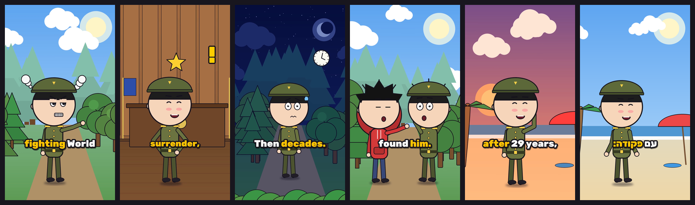
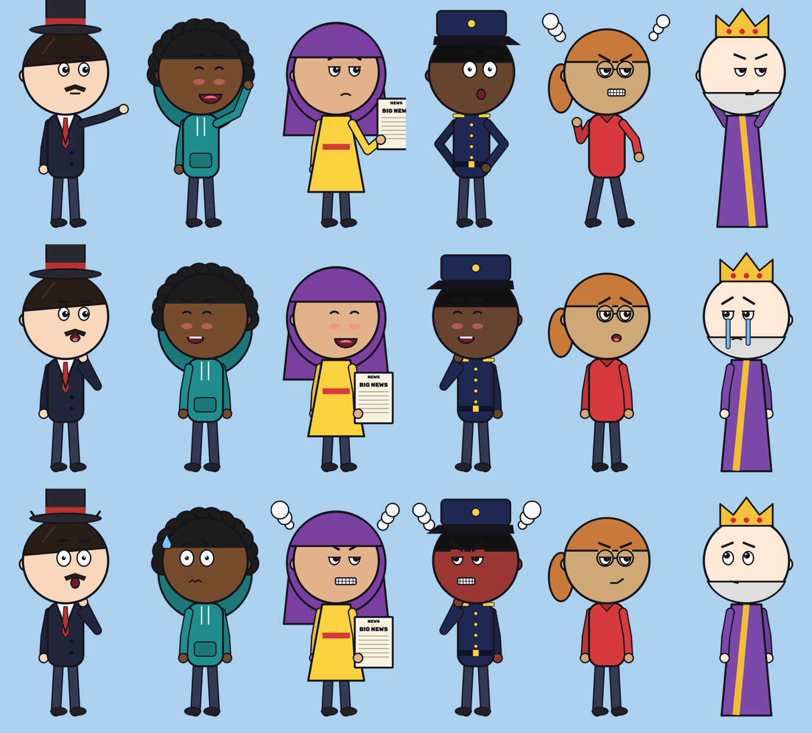
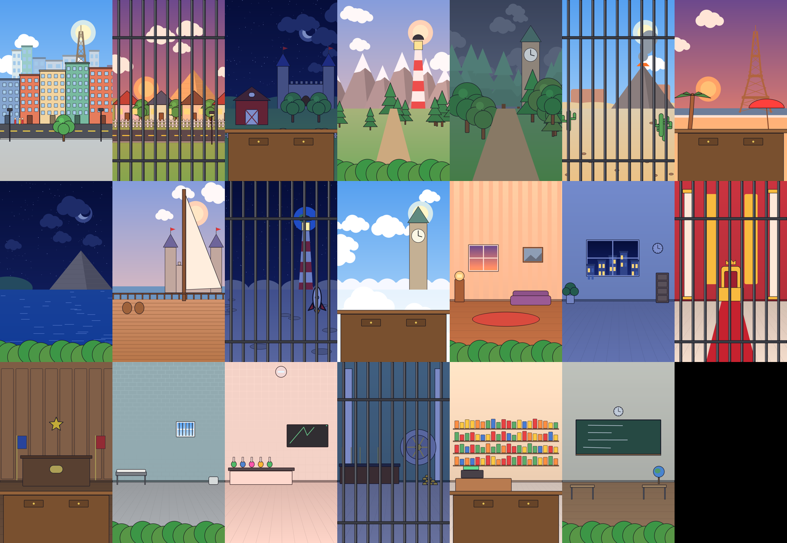

Say “make me an animated short”. Claude pitches true stories, writes the script, voices it, animates original cartoon characters, checks its own preview, and hands you a finished 1080×1920 MP4.
/plugin install toon-shorts --marketplace omer-yehuda/plugins

Real frames from the bundled example, rendered by the plugin. The last frame has Hebrew captions.

12 moods with cartoon effects, 11 poses, 6 skin tones, 12 hats including a headscarf, 7 outfits and 28 props.

Three parallax layers per set, so camera moves show depth. Five times of day, landmarks, and bars, desk, crowd or bushes in front.
1-3 words at a time, with the spoken word lit up. Timing comes from exact AI-voice line spans, or snaps to the pauses in your own recording.
כתוביות בעברית, מימין לשמאל
Numbers and brackets stay correct. Record your own voice in Hebrew, or go captions-only.
Before you see anything, Claude reviews a contact sheet for covered faces, cropped characters and scenes that don't match their line.
Nothing installs without asking. A private venv, pinned dependencies, a SHA-256-verified voice model, no telemetry and no uploads.
Original scripts and characters, never copies of another creator. Real facts only: no invented quotes and no stories about private people.
Kokoro voices are Apache-2.0 and the bundled font is OFL, so you can monetize your shorts.